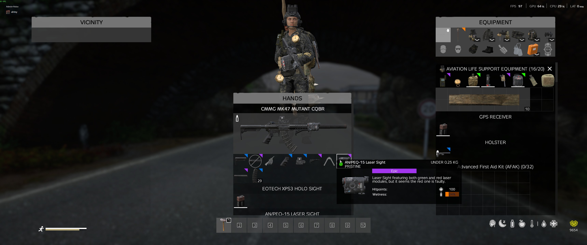
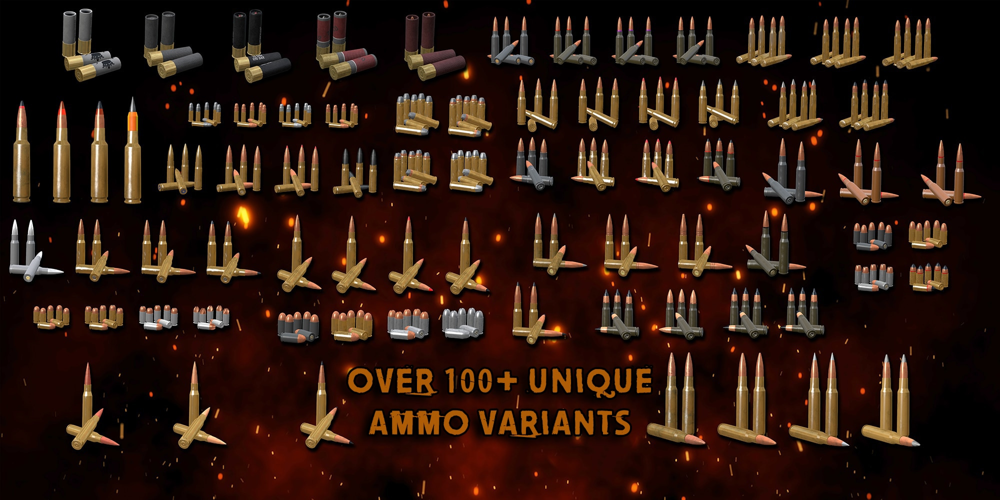

Combat & Weapons¶
Master the arsenal of Survivatorium. With an expanded selection of firearms, realistic ballistics, and deadly AI threats, you'll need to know your weapons to survive.
Table of Contents¶
- The Arsenal
- Weapon Customization
- Real-World Ammo & Ballistics
- Clothing & Armor
- Reputation & Gear Access
- AI Threats
- Combat Tips
The Arsenal¶
Survivatorium features a massive variety of firearms, blending vanilla DayZ weapons with high-quality additions from the Tactical Flava and DayZ Expansion mods.
Weapon Categories¶
- Sidearms: From basic Makarovs to high-capacity FN Five-seveNs and Desert Eagles. Perfect for backup or dealing with infected.
- Submachine Guns: MP5s, P90s, and MP7s. Excellent for close-quarters combat and clearing buildings.
- Assault Rifles: The backbone of any survivor's loadout. Choose from the reliable AK platform, versatile M4s, heavy-hitting SCARs, and more.
- Sniper & Marksman Rifles: For those who prefer to engage from a distance. Includes classic bolt-actions like the Mosin and modern DMRs like the M110.
- Shotguns: Devastating at close range. Ranging from double-barrel hunting shotguns to tactical semi-automatics like the Benelli M4.
- Heavy Weapons: For when you absolutely need to destroy a target (or a base). Includes RPGs, LAWs, and grenade launchers.
Weapon Customization¶
A stock rifle is just the beginning. You can customize your firearms to suit your playstyle using a wide array of attachments.

Optics¶
Choose the right sight for the job: - Red Dots & Holographics: Fast target acquisition for close-to-medium range (e.g., EOTech, M68). - Magnified Optics: Versatile scopes for medium engagements (e.g., ACOG, HAMR). - Sniper Scopes: High-magnification optics for extreme long-range precision. - Night Vision: Specialized scopes for operating in the dark.
Suppressors & Muzzles¶
- Suppressors: Reduce your acoustic signature to avoid drawing unwanted attention from infected or other players.
- Compensators: Help manage recoil for faster follow-up shots.
Furniture¶
Upgrade your weapon's handling and ergonomics by swapping out handguards, buttstocks, and pistol grips. Many Tactical Flava weapons offer extensive modularity, allowing you to build your perfect rifle.
Real-World Ammo & Ballistics¶
Survivatorium uses the Real-World Ammo & Ballistics mod, which significantly changes how firearms behave compared to vanilla DayZ.

Key Features¶
- Authentic Calibers: Weapons use their real-world ammunition types. Make sure you're loading the correct caliber!
- Realistic Trajectories: Bullets experience realistic drop and wind drift over distance. You will need to learn how to zero your optics and compensate for bullet drop.
- Penetration & Damage: Different calibers have different penetration values. A 5.56x45mm round will behave very differently against body armor than a 7.62x51mm round.
- Armor Matters: High-tier plate carriers and helmets will save your life against smaller calibers, but heavy sniper rounds or armor-piercing ammunition can still punch through.
Clothing & Armor¶
Not all clothing is equal. What you wear has a real, calculated effect on how much damage you absorb from melee hits and bullets. Understanding the tiers helps you make smarter looting decisions — especially knowing the difference between gear that looks tactical and gear that is tactical.
How Protection Works¶
Every item you wear on each body slot contributes a weighted fraction of protection. Some slots matter more than others — your head and face account for far more of your total protection than your boots or gloves. Stacking protection across all slots gives the best result, but no single piece of gear will save you on its own.
Protection affects how much damage is reduced, not whether a hit lands. You will still take damage — you'll just take less of it.
Clothing Tiers¶
Civilian Clothing¶
T-shirts, jeans, hoodies, casual jackets. Minimal protection — essentially just fabric. Better than nothing against a knife, but gunfire passes through as if you're wearing nothing meaningful.
Military / Tactical Clothing¶
Combat shirts (Crye G3, 5.11), tactical pants, military field jackets, and ripstop/Cordura fabric gear. Slightly more cut and abrasion resistant. Does not stop bullets.
Accessories (Pouches, Belts, Panels)¶
A body covered in MOLLE pouches stuffed with gear does technically provide a marginal token of protection — think of it as the zippo-lighter-in-a-breast-pocket effect. Statistically negligible. Don't plan around it.
Vest Tiers¶
Vests are where protection actually matters. There are five tiers based on real-world ballistic ratings.
🟤 Tier 1 — Load-bearing (no armor)¶
These vests hold your gear. That's it — no ballistic plates, no soft armor panels. They look tactical and will not stop a bullet.
| Vest | Notes |
|---|---|
| Plate Frame Carrier | Empty frame, no insert pockets |
| TV-110T Chest Rig | Magazine carrier only |
| ALSE Survival Vest | Aviation life support vest |
A chest rig is not a vest
If it has no ballistic insert, it's Tier 1. You are effectively unarmored in the vest slot.
🟡 Tier 2 — Soft Body Armor¶
Woven Kevlar or ballistic fabric — no hard plates. Rated against handgun calibers (9mm, .45 ACP, .44 Mag). Will not stop rifle fire.
| Vest | Notes |
|---|---|
| PACA Soft Armor | Concealable NIJ IIIA soft vest |
| LV-MBAV | Low-visibility MBAV, handgun rated |
Good for: Close-quarters PvP where pistols dominate, undercover loadouts.
🟠 Tier 3 — Light Plate Carrier¶
Ceramic or steel plates rated for common rifle threats — 5.56, 7.62×39, 7.62×51 M80. The bread-and-butter military vest. A massive improvement over soft armor in any sustained firefight.
| Vest | Notes |
|---|---|
| Crye Precision AVS | High-end modular carrier |
| Crye Precision JPC | Jumpable Plate Carrier, lightweight |
| Crye Precision JPC 2.0 | Updated JPC with improved coverage |
| LBT-6094 | Standard US military issue carrier |
| AWS SPC | Scalable Plate Carrier |
| DPC Plate Carrier | Dynamic Plate Carrier |
| D3CRX | Lightweight competition carrier |
| SSMK4 Plate Carrier | High-mobility design |
| Osprey MK4 | British military issue |
Good for: General combat, military zone looting, PvP at any range.
🔴 Tier 4 — Heavy Plate Carrier¶
Top-tier ballistic protection. Handles AP rifle rounds, multi-hit capable. What tier-1 operators wear into the hardest objectives.
| Vest | Notes |
|---|---|
| Crye Precision CPC | Cage Plate Carrier, special operations |
| Ferro Concepts FCPC | Ultralight competition carrier with hard plates |
| LV-119 Plate Carrier | Paraclete-style heavy carrier |
| MMAC Plate Carrier | Modular Multi-mission Assault Carrier |
| 5.11 TacTec Plate Carrier | Law enforcement / mil-spec |
Good for: High-value zone raids, endgame PvP, opponents running AP ammunition.
🟥 Tier 5 — Full-coverage Military Armor¶
The heaviest armor in the game. Full front, back, and side hard plate coverage with groin and shoulder protection. These are visually the largest carriers — you will know one when you see it on the ground.
| Vest | Notes |
|---|---|
| IOTV Gen4 Body Armor | US Army-issue full-coverage carrier |
| Thor Integrated Carrier | Full wraparound plate carrier |
Good for: Absorbing sustained fire in the most dangerous zones. The tradeoff is weight and mobility.
Biggest vs. best
T5 vests absorb more from the vest slot than any other piece of gear, but the vest slot is still only ~17% of total protection weighting. A T5 vest doesn't replace a helmet and gasmask.
Helmets¶
Helmets cover the headgear slot. Your head and face together account for over 50% of total protection weighting — a bare skull is a serious liability. Ballistic helmets are rated against pistol/fragment threats, not direct rifle hits, but every bit counts.
Layering beats single-slot optimization
A player in a T4 vest with no helmet and bare hands absorbs less total damage than one wearing a T3 vest, a combat helmet, and tactical gloves. Cover all slots.
Reputation & Gear Access¶
Your standing on the server directly impacts the gear you can acquire.
The Reputation System¶
As you complete quests, hunt dangerous animals, and eliminate hostile AI, you will earn Reputation. - Death Penalty: Dying will cost you a significant amount of Reputation, so play carefully!
Unlocking the Good Stuff¶
Traders won't sell their best gear to just anyone. - Basic Gear: Common tools, civilian clothing, and low-tier weapons are available to everyone. - Advanced Gear: As your Reputation grows, you'll unlock access to military-grade firearms, high-end optics, and heavy armor. - Top-Tier Loot: The most exotic and devastating weapons require a very high Reputation score to purchase.
AI Threats¶
You aren't just fighting other players and infected. DeerIsle is populated by dangerous AI factions.
Hostile Mercenaries¶
Heavily armed AI patrols guard key military installations and high-value loot zones. They use squad tactics, take cover, and will engage you on sight.
Patrol Helicopters¶
Keep an eye on the sky. Heavily armed patrol helicopters occasionally sweep the island. If they spot you, they will open fire with devastating weaponry. Taking one down yields incredible rewards, but it requires heavy firepower and coordination.
Trophies of War (Dogtags)¶
When you engage in PvP and emerge victorious, you can claim a trophy to prove your skills. - Collecting Dogtags: When you kill another player, you can loot their Dogtag from their body. - Secure Containers: You can store these dogtags safely in specialized secure containers to ensure you don't lose your hard-earned trophies if you are killed on your way back to base.
Combat Tips¶
- Check Your Zero: Always know what distance your optic is zeroed to before taking a shot.
- Manage Your Stamina: Don't drain your stamina right before a firefight. You need it to hold your breath for steady aiming.
- Use Cover: The AI is deadly accurate. Never stand in the open during a firefight.
- Bring Medical Supplies: Always carry bandages, blood bags, and morphine. A single bullet can cause heavy bleeding or unconsciousness.
- Know When to Run: If you're outgunned or pinned down by a patrol helicopter, sometimes the best tactic is to retreat and survive.